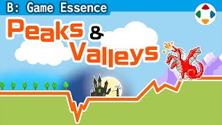
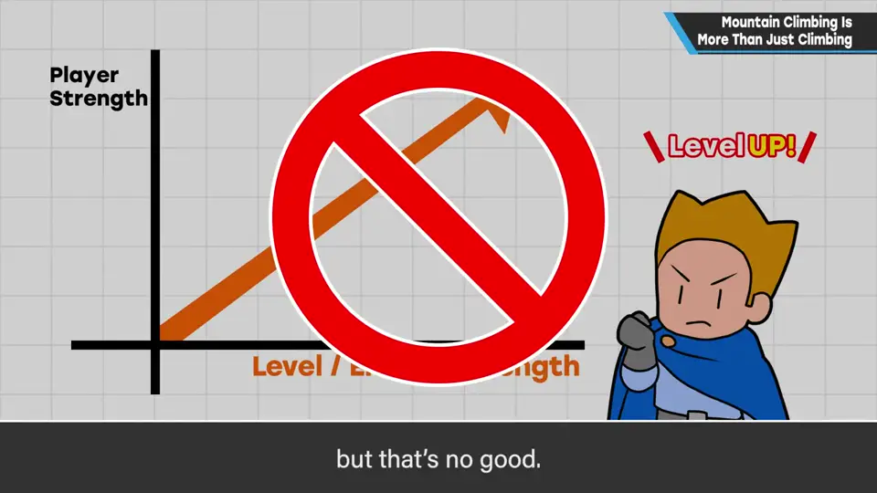
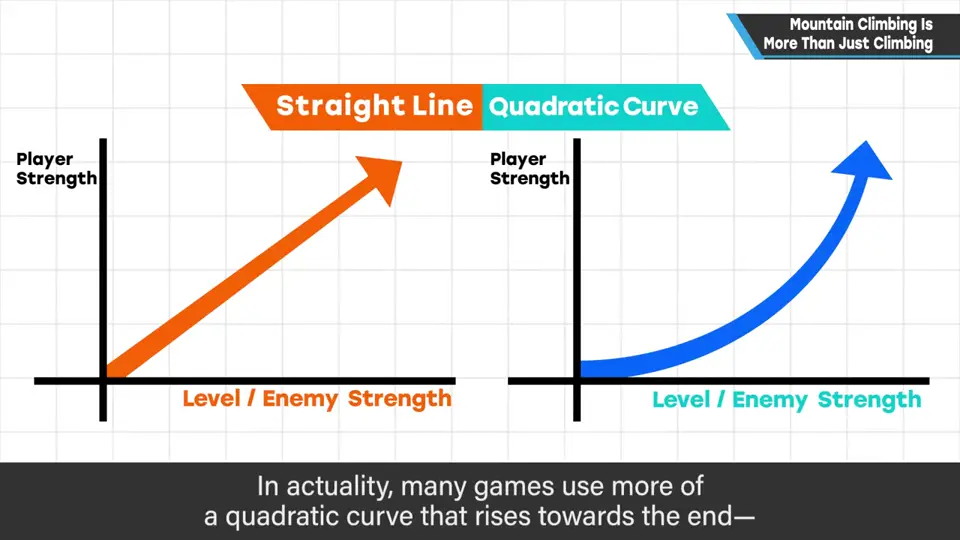
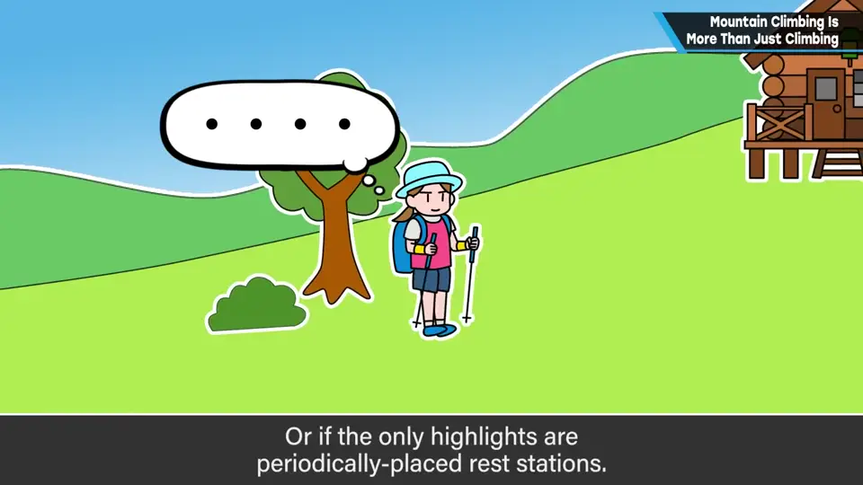
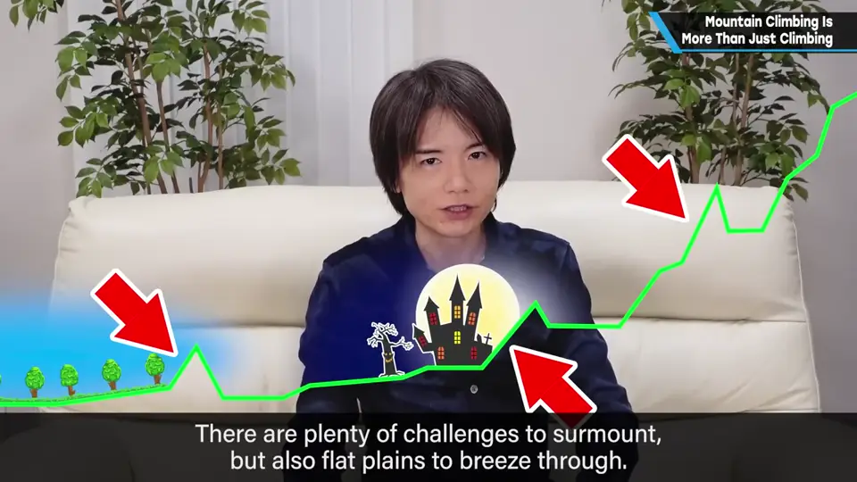
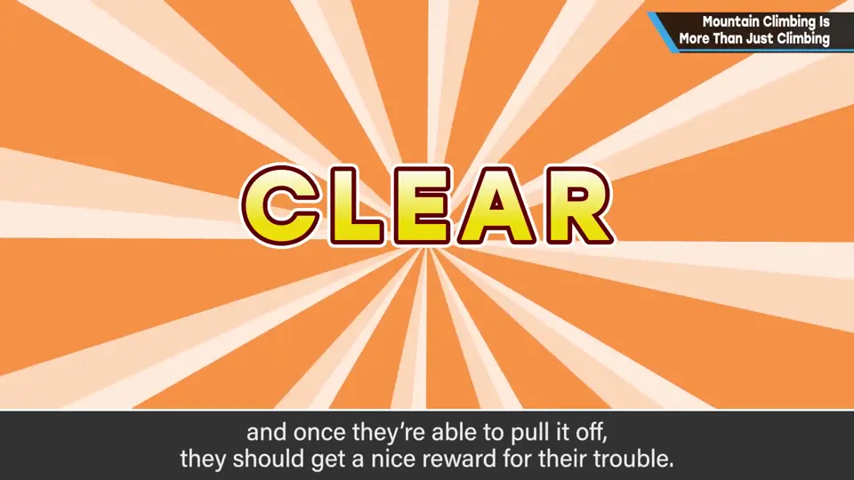
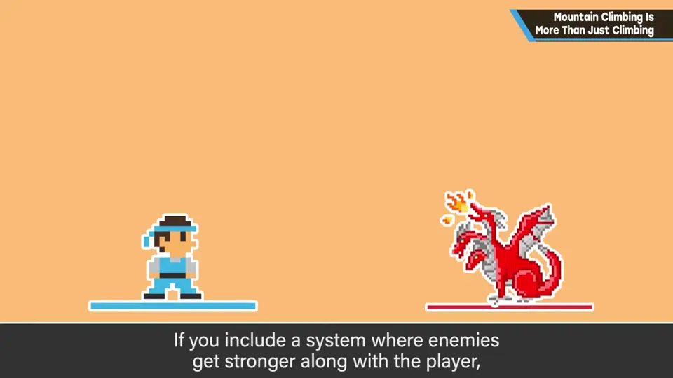
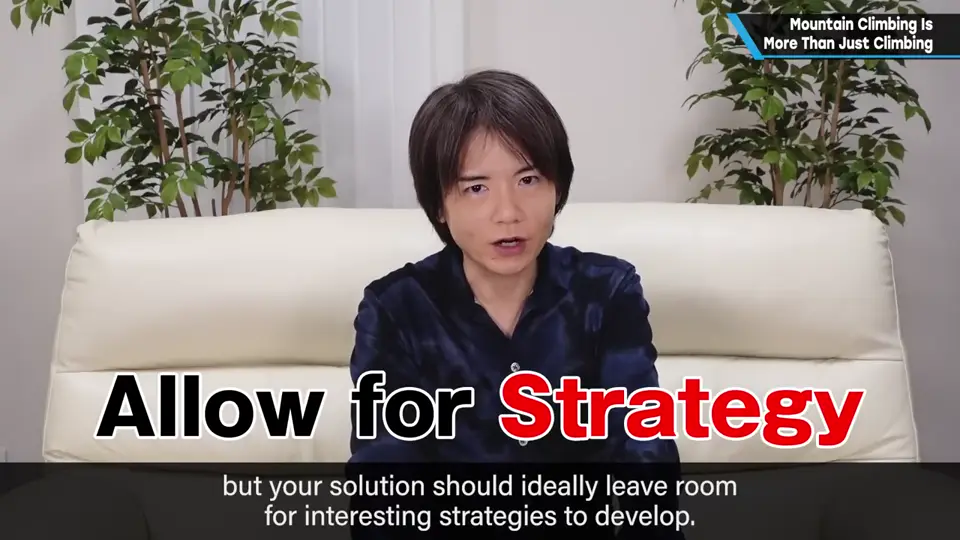

速览
在角色会成长的 RPG 等作品中，把自机强度和随进度变强的敌人/障碍强度画成图，人们常以为两者都是笔直上升——不能这样做（实际上多是后段上扬的二次曲线，先不谈）。自机与敌人强度单纯成正比，就像沿着同样角度的平坦坡道一直爬：风景一成不变，休息点只定期出现，毫无喜悦，只是「作业」。更好的平衡是凹凸起伏：有必须越过的难关，也有稍微轻松的平地。难关一般由 Boss 构成，但不是按「Boss 比周围强」的定式来放，而是放置像 Boss 一样的困难，让玩家好好思考攻略，并给顺利通关的人相应回报。也要准备平坦处：故意做出没有敌人的空间、合理配置能赚钱的地方，会让探索更有趣。实际游戏更复杂，有一定自由度时很难做好「跷跷板平衡」；而如果加入敌人随自机变强的系统，刷级就失去了意义。解决方法有很多，但最好朝保留攻略空间的方向去整理。
1. 别让强度成正比直线上升 0:02
在角色会成长的 RPG 等作品中，把预想的自机强度、以及随进度变强的敌人与障碍强度画成图，人们常以为两者都是笔直的右肩上升——这样做不行。（实际上多为后段上扬的二次曲线，这里先不谈。）



比如登山：一直沿着同样角度的平坦坡道往上爬，很累吧？风景一直差不多、休息点只是定期出现——这不会产生任何喜悦，可以说只是「作业」。
2. 有起伏的平衡 1:01
现实登山不会这样，但实际的游戏平衡最好像这样凹凸起伏：有必须越过的难关，也有稍微轻松些的平地。


- 难关一般由 Boss 等构成。但不是依「Boss 比周围强」的定式来配置，而是放置 Boss 般的困难，让玩家好好思考攻略，给顺利通关的人相应的回报。
- 也要准备平坦的地方：不是让敌人一直出现，而是故意做出空无一物的空间；合理配置能赚钱的地方也很有效。
- 这些做法会让游戏的探索更有趣。
3. 更复杂的现实 1:58
实际的游戏更复杂，例如有一定自由度、可以到处走；这时很难用严谨的「跷跷板平衡」做游戏。
但如果加入敌人随自机变强的系统，刷级就失去了意义。解决方法可以有很多，最好朝保留攻略空间的方向去整理。


自测题
1. 为什么自机强度与敌人强度不该成正比直线上升？
就像一直爬同样角度的坡：风景单调、休息点只是定期出现，毫无喜悦，变成「作业」。 0:33
2. 樱井推荐什么样的平衡？Boss 应怎样配置？
凹凸起伏：有必须越过的难关，也有平地。不是按「Boss 比周围强」的定式，而是放置需要认真攻略的困难，并给通关者相应回报；也要有空无一物的空间和能赚的地方。 1:01
3. 加入「敌人随玩家变强」的系统有什么问题？
刷级（赚经验/钱）会失去意义；解决时应尽量保留攻略的空间。 2:13